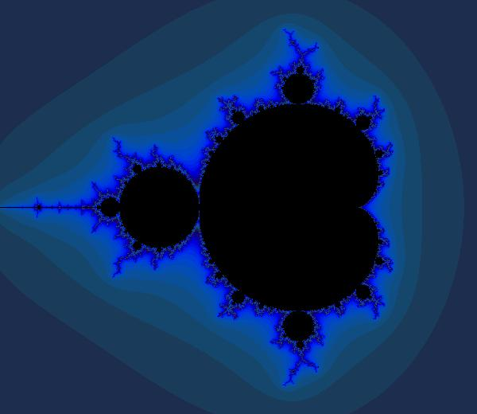

虽然可视化曼德布洛特(Mandelbrot)集合与机器学习没有任何关系，但这对于将TensorFlow应用在数学更广泛的领域是一个有趣的例子。实际上，这是tensorflow一个非常直截了当的可视化运用。（我们最终也许会提供一种更加精心设计的运用方式来生成真正更加美丽的图像。）
说明：本教程使用了IPython的notebook。
首先，我们需要导入一些库。
# 导入仿真库
import tensorflow as tf
import numpy as np
# 导入可视化库
import PIL.Image
from cStringIO import StringIO
from IPython.display import clear_output, Image, display
import scipy.ndimage as nd
现在我们将定义一个函数来显示迭代计算出的图像。
def DisplayFractal(a, fmt='jpeg'):
"""显示迭代计算出的彩色分形图像。"""
a_cyclic = (6.28*a/20.0).reshape(list(a.shape)+[1])
img = np.concatenate([10+20*np.cos(a_cyclic),
30+50*np.sin(a_cyclic),
155-80*np.cos(a_cyclic)], 2)
img[a==a.max()] = 0
a = img
a = np.uint8(np.clip(a, 0, 255))
f = StringIO()
PIL.Image.fromarray(a).save(f, fmt)
display(Image(data=f.getvalue()))
为了操作的方便，我们常常使用交互式会话（interactive session），但普通会话（regular session）也能正常使用。
sess = tf.InteractiveSession()
我们可以自由的混合使用NumPy和TensorFlow，这一点非常方便。
# 使用NumPy创建一个在[-2,2]x[-2,2]范围内的2维复数数组
Y, X = np.mgrid[-1.3:1.3:0.005, -2:1:0.005]
Z = X+1j*Y
现在我们定义并初始化一组TensorFlow的张量 （tensors）。
xs = tf.constant(Z.astype("complex64"))
zs = tf.Variable(xs)
ns = tf.Variable(tf.zeros_like(xs, "float32"))
TensorFlow在使用之前需要你明确给定变量的初始值。
tf.initialize_all_variables().run()
现在我们指定更多的计算...
# 计算一个新值z: z^2 + x
zs_ = zs*zs + xs
# 这个新值会发散吗？
not_diverged = tf.complex_abs(zs_) < 4
# 更新zs并且迭代计算。
#
# 说明：在这些值发散之后，我们仍然在计算zs，这个计算消耗特别大！
# 如果稍微简单点，这里有更好的方法来处理。
#
step = tf.group(
zs.assign(zs_),
ns.assign_add(tf.cast(not_diverged, "float32"))
)
...继续执行几百个步骤
for i in range(200): step.run()
让我们看看我们得到了什么。
DisplayFractal(ns.eval())

结果不错！
原文：Mandelbrot Set 翻译：ericxk 校对：tensorfly